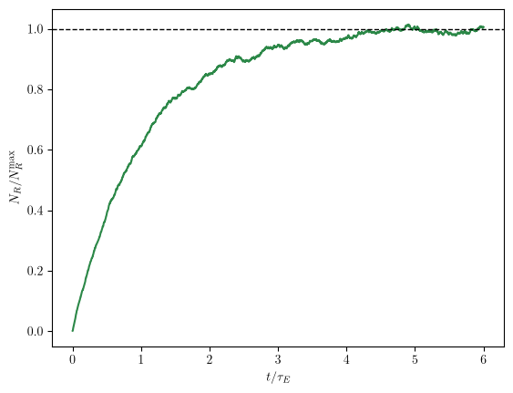
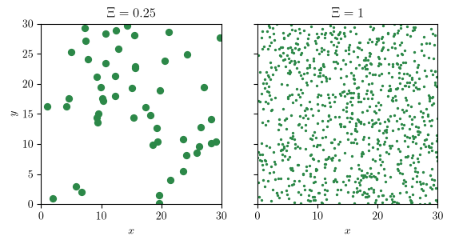
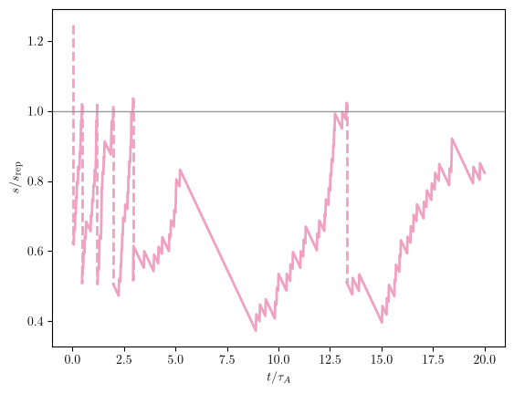
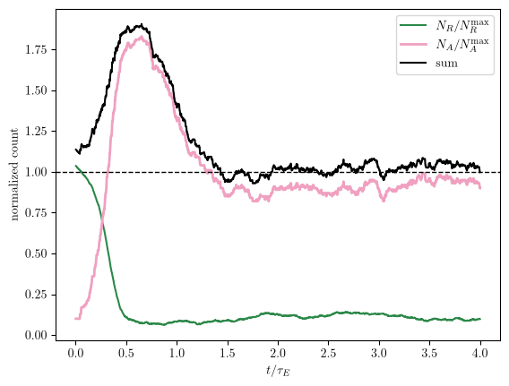

The model
pyLEAFS v1 implements a replenishing resource field and a single greedy forager living on it. What follows states the model rather than derives it; the derivations and the notation are in the papers on the pyLEAFS. Sections marked (later layer) name extensions not yet implemented.
The resource field
Resources are energy quanta scattered through a \(D\)-dimensional toroidal box and treated as a Poisson point process. In each region of the grid, one timestep of duration \(dt\) births and kills them stochastically:
where \(\Gamma\) is the energy influx per unit volume, \(\tau_E\) the
resource lifetime, the inverse of the decay rate \(\gamma\), \(\epsilon\)
the energy carried by one resource, and
\(L\) the region side length. Births place a resource uniformly in the
region and deaths remove uniformly chosen ones; both counts for every region
come from two vectorized calls per step, with the grow/decay order randomized
per region to avoid bias. The ResourceField is the struct-of-arrays
descendant of the MATLAB Region/Environment pair.
With no agents present the field relaxes to an equilibrium count per region
which ResourceField exposes as N_eq.
Start the field empty, with no agents, and it fills toward that count on the timescale \(\tau_E\). The count is plotted in units of \(N_R^{\max}\), \(N_\mathrm{eq}\) summed over the regions, so the dashed line sits at 1.
import numpy as np
import matplotlib.pyplot as plt
from pyLEAFS import Simulation, palette
sim = Simulation.forager(seed=0, n_agents=0)
field = sim.fields[0]
field.seed(sim.rng, n0=0)
tau_E = 1 / field.gamma
NR_max = field.N_eq * sim.grid.n_regions
counts = []
for _ in range(3000):
sim.step()
counts.append(field.total() / NR_max)
t = sim.dt * np.arange(1, 3001)
fig, ax = plt.subplots()
ax.plot(t / tau_E, counts, color=palette.resource_deep)
ax.axhline(1, color='k', ls='--', lw=1)
ax.set_xlabel(r'$t/\tau_E$')
ax.set_ylabel(r'$N_R/N_R^{\max}$')
plt.show()

Homogeneity
Rather than set \(\epsilon\) directly, the model is parameterized by a single dimensionless homogeneity \(\Xi\), the ratio of the agent length scale \(\ell_A\) to the mean resource spacing \(\ell_E\):
In pyLEAFS the agent length scale \(\ell_A\) is the collection radius.
Inverting for the energy per resource gives the relation
forager() uses:
Small \(\Xi\) is a heterogeneous world: few energy-rich resources, widely spaced. Large \(\Xi\) is a homogeneous one: many lean resources, densely packed. Homogeneity is the central control variable of the whole research program: the semantic-information threshold, the foraging phenotypes, and the punctuated evolutionary dynamics are all studied as functions of \(\Xi\).
Two newly filled fields on a \(3 \times 3\) grid of regions show the two ends, each dot’s area proportional to its resource’s energy \(\epsilon\).
import matplotlib.pyplot as plt
from pyLEAFS import Simulation, palette
fig, axes = plt.subplots(1, 2, sharey=True)
for ax, Xi in zip(axes, (0.25, 1.0)):
sim = Simulation.forager(seed=0, shape=(3, 3), Xi=Xi)
field = sim.fields[0]
food = field.positions
ax.scatter(food[:, 0], food[:, 1], s=200 * field.epsilon,
color=palette.resource_deep)
ax.set_xlim(0, sim.grid.extent[0])
ax.set_ylim(0, sim.grid.extent[1])
ax.set_aspect('equal')
ax.set_title(r'$\Xi = %g$' % Xi)
ax.set_xlabel(r'$x$')
axes[0].set_ylabel(r'$y$')
plt.show()

The agent
An agent is a body with a position \(\mathbf{x}\), a unit heading \(\hat{\mathbf{n}}\), and a fuel reserve \(s\). Each timestep it senses, steers, moves, harvests, and metabolizes.
Sensing and steering. The v1 controller is greedy: the agent looks for the nearest resource within a sensing radius \(R_\mathrm{sense}\) and turns to face it. With nothing in range its heading diffuses,
a rotation by Gaussian angular noise of strength \(\sigma/\sqrt{\tau_A}\), realized in 2d as a heading-angle perturbation and in 3d as a renormalized tangential kick. The greedy rule is the perfect-fidelity limit of the sensor model; replacing it with a learned controller is a (later layer).
Motion. The agent advances ballistically and wraps on the torus:
with \(v\) the translational speed.
Harvesting and metabolism. Every resource within the collection radius \(\ell_A\) is consumed, each returning energy \(\epsilon\). Fuel follows
where \(\mu_0\) is the basal metabolic rate and \(h\) the harvest rate, capped at \(s \le s_\mathrm{max}\). Metabolism here is a single basal term; the (later layer) in which sensors and actions modulate \(\mu_0\) - sensors as behaviors that cost energy - is the subject of the energy-harvesting notes on the pyLEAFS.
Reproduction and death. When fuel reaches the threshold \(s_\mathrm{rep} = 0.8\,s_\mathrm{max}\) the agent buds: it spawns a daughter a short distance away and the two split the fuel equally. An agent dies when \(s \le 0\). In v1 the daughter is an exact clone; mutation of a genome is a (later layer).
Track one agent by its id: it starts full and buds on its first step, and
from then on you see its fuel drain at the steady rate \(\mu_0\), jump by
\(\epsilon\) with each resource it collects, and halve when it reaches the
budding threshold, the grey line. Fuel is plotted in units of
\(s_\mathrm{rep}\), so that line sits at 1, and time in units of
\(\tau_A\); each halving is drawn dashed.
import numpy as np
import matplotlib.pyplot as plt
from pyLEAFS import Simulation, palette
sim = Simulation.forager(seed=1)
pop = sim.populations[0]
agent = pop.ids[0]
s_rep = pop.repro_threshold
# A bud halves the fuel within a step, so on a step where the agent buds
# we also draw the fuel it had just before, twice what is left after, and
# join the two with a dashed drop.
t, fuel, drops = [], [], []
for k in range(1, 1001):
buds = int(pop.offspring[pop.index_of(agent)])
sim.step()
i = pop.index_of(agent)
tk, s = k * sim.dt / pop.tau_A, pop.fuel[i] / s_rep
if pop.offspring[i] > buds:
t += [tk, np.nan]
fuel += [2 * s, np.nan]
drops.append((tk, s))
t.append(tk)
fuel.append(s)
fig, ax = plt.subplots()
ax.plot(t, fuel, color=palette.brain_pink, lw=2)
for tk, s in drops:
ax.plot([tk, tk], [2 * s, s], color=palette.brain_pink, lw=2, ls='--')
ax.axhline(1, color='0.6', lw=1)
ax.set_xlabel(r'$t/\tau_A$')
ax.set_ylabel(r'$s/s_\mathrm{rep}$')
plt.show()

Population dynamics
With agents drawing down the field, the resource and agent counts trace a predator–prey-like relation framed by two carrying capacities:
with \(V\) the domain volume. \(N_R^{\max}\) is the no-agent resource equilibrium and varies with \(\Xi\); \(N_A^{\max}\) is the agent carrying capacity and does not. At equilibrium the normalized counts lie on a line,
the diagonal of the phase plane. Starting from the empty-agent corner, a seeded population overshoots, grazes the field down, and settles into a sustained oscillation about this line rather than going extinct; that is the behavior the v1 test suite pins. Plotting the trajectory in the \((N_R/N_R^{\max},\,N_A/N_A^{\max})\) plane, and detecting the transition onto the equilibrium line, is the first of the (later) observables.
A run of the default world shows the two normalized counts and their sum. The agents overshoot, graze the field down, and from then on the sum hovers about 1.
import numpy as np
import matplotlib.pyplot as plt
from pyLEAFS import Simulation, palette
sim = Simulation.forager(seed=0)
field, pop = sim.fields[0], sim.populations[0]
NR_max = field.N_eq * sim.grid.n_regions
NA_max = field.Gamma * np.prod(sim.grid.extent) / pop.mu0
tau_E = 1 / field.gamma
nR, nA = [], []
for _ in range(2000):
sim.step()
nR.append(field.total() / NR_max)
nA.append(pop.count / NA_max)
t = sim.dt * np.arange(1, 2001) / tau_E
fig, ax = plt.subplots()
ax.plot(t, nR, color=palette.resource_deep, label=r'$N_R/N_R^{\max}$')
ax.plot(t, nA, color=palette.brain_pink, lw=2, label=r'$N_A/N_A^{\max}$')
ax.plot(t, np.add(nR, nA), color='k', label=r'$\mathrm{sum}$')
ax.axhline(1, color='k', ls='--', lw=1)
ax.set_xlabel(r'$t/\tau_E$')
ax.set_ylabel(r'$\mathrm{normalized\ count}$')
ax.legend()
plt.show()

Semantic information
The point of building the model around energy and sensing is to measure the information an agent needs to stay alive. In the Kolchinsky–Wolpert framework the semantic information is the share of the agent–environment mutual information that is actually necessary for viability, the expected lifetime. Scramble the sensor past a critical noise level \(\eta_c\) and viability collapses; below it, noise barely matters. The threshold depends only on the agent’s geometry,
with \(R\) the sensing radius. Computing the mutual information, transfer entropy, and viability curve from logged trajectories is a planned analysis (later layer); v1 provides the dynamics they are measured on.
Roadmap of layers
Everything marked (later layer) attaches to the v1 core described in Architecture: a pheromone field (reaction–diffusion) as a second entry in the field list, predators and trophic levels as additional populations in the step loop, a heterogeneous environment with spatially varying \(\Gamma\), neuroevolution replacing the greedy rule with an evolvable recurrent controller and sensor array under mutation and selection, a chemoton - internal metabolism - in place of the single basal term, and the information-theoretic observables: semantic information, mutual information, and transfer entropy.